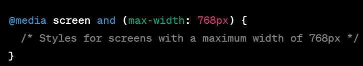

What is Responsive Web Design?
Responsive web design is an approach to web development that aims to make web pages render well on a variety of devices and window or screen sizes. The core idea is to create a flexible and adaptable layout and user interface that responds to the user's screen, providing an optimal viewing and interaction experience.
Principles of Responsive Web Design
-
Fluid Grid Layouts
One of the fundamental principles of responsive design is the use of fluid grid layouts. Instead of fixed pixel measurements, use relative units like percentages for defining widths and heights. This allows elements to scale and adjust based on the screen size.
-
Media Queries
Media queries are CSS rules that apply styles based on the characteristics of the device, such as its screen width, height, or orientation. These queries allow you to define different styles for various screen sizes.
-
Flexible Images and Media
Ensure that images and media elements are responsive by setting their maximum width to 100%. This prevents images from overflowing their containers on smaller screens.
-
Mobile-First Design
Start designing for mobile devices first and then progressively enhance the layout and features for larger screens. This ensures a better user experience on small screens and avoids overloading mobile users with unnecessary content.

Best Practices
-
Prioritize Content
Identify and prioritize essential content and features for mobile users. Make sure that critical information is easily accessible and visible on small screens.
-
Test Across Devices
Regularly test your responsive designs on various real devices and screen sizes. Emulators and browser developer tools are helpful, but nothing beats real-world testing.
-
Performance Optimization
Optimize your responsive website for performance. Minimize HTTP requests, use efficient image formats, and implement lazy loading for images and resources.
Practical Implementation Tips
-
Use Frameworks and Libraries
Consider using frontend frameworks like Bootstrap, Foundation, or CSS Grid to streamline your responsive design process. These tools provide pre-built components and responsive grid systems.
-
Typography Matters
Pay attention to typography on smaller screens. Use legible fonts, appropriate font sizes, and line spacing to ensure readability.
-
Touch-Friendly Design
Optimize your website for touch interactions on mobile devices. Ensure that buttons and links are large enough to tap easily, and avoid relying solely on hover effects.
Conclusion
Responsive web design is not just a trend; it's a necessity in today's multi-device world. By following the principles and best practices outlined in this guide and staying up-to-date with the latest frontend development techniques, you can create websites that offer a seamless and enjoyable experience for all users, regardless of the device they use. Remember that responsive design is an ongoing process. As new devices and screen sizes emerge, continue to adapt and refine your designs to ensure they remain accessible and user-friendly. So, go ahead and apply these principles to your next web project, and you'll be well on your way to becoming a responsive web design pro!
Feel free to customize and expand upon this blog post to suit your writing style and the specific needs of your audience. You can also include visual examples and code snippets to make the content more engaging and practical.